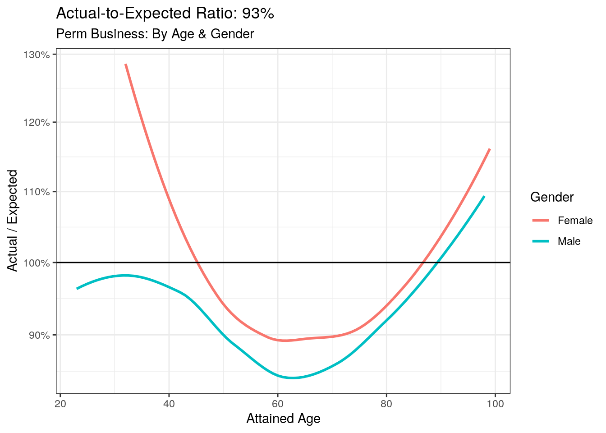
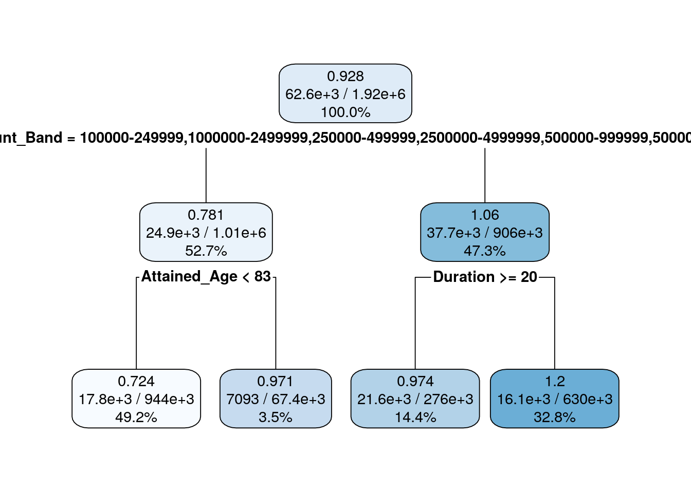

Chapter 3 Data Analysis & Inferential Modeling
3.1 Overview
In this section, the focus is on preparing data for modeling. First, we’ll extract subsets from the ILEC parquet file. Next, we’ll build some models to aid our data analysis. This technique is called inferential modeling.
3.2 Technical Tools: Working with DuckDB
if (!require("duckdb")) {
install.packages("duckdb")
library(duckdb)
}
if (!require("tidyverse")) {
install.packages("tidyverse")
library(tidyverse)
}
if (!require("knitr")) {
install.packages("knitr")
library(knitr)
}
# remove any existing connections, if they exist
if (exists("duckdb_conn")) {
duckdb::duckdb_shutdown(duckdb_conn@driver)
duckdb::dbDisconnect(duckdb_conn)
rm(duckdb_conn)
}
# create a connection for duckdb
duckdb_conn <- duckdb::dbConnect(duckdb::duckdb(), ":memory:");
# set this to match your system's available memory
suppressMessages({
ignore_result <- DBI::dbExecute(duckdb_conn, "SET memory_limit = '4GB'")
})
# point this to the parquet file built in the last chapter
ILEC_PQ_FILEPATH <- "/mnt/data/ilec/ilec_2009_19_20210528.parquet"
tbl_ilec_data <- tbl(duckdb_conn,
sprintf("read_parquet('%s')", ILEC_PQ_FILEPATH))
# print an exposures and death summary, note that the code is
# exactly the same as the standard tidyverse syntax, except for
# the call to collect(), which is explained later.
tbl_ilec_data %>%
group_by(Observation_Year) %>%
summarise(
`Total Exposures` = sum(Policies_Exposed, na.rm=T),
`Total Deaths` = sum(Number_Of_Deaths, na.rm=T)
) %>%
collect() %>%
kable(caption = "ILEC 2017 Data Summary")| Observation_Year | Total Exposures | Total Deaths |
|---|---|---|
| 2009 | 31322347 | 249865 |
| 2010 | 40190513 | 412029 |
| 2011 | 57118520 | 563694 |
| 2012 | 51036427 | 537286 |
| 2013 | 57373029 | 554199 |
| 2014 | 57552165 | 560393 |
| 2015 | 57907852 | 565853 |
| 2016 | 57921762 | 552127 |
| 2017 | 57346148 | 558579 |
| 2018 | 26188701 | 360381 |
We’ll prepare two modeling data frames, based on the product type and the number of underwriting classes. Let’s tabulate the exposures by the number of preferred underwriting classes and insurance plan (product type). These are important considerations for the following reasons:
Number of Preferred Classes: Insurers want to match the mortality risk of policyholders with the amount that the product costs. This is accomplished through underwriting, where assessments of the policyholders’ health determines if they are eligible for a policy and also cheaper premiums by belonging to a preferred class where the mortality risk is lower than other policyholders. If there is a large number of preferred classes, there is likely more extensive underwriting. If there is no preferred classes, the insurer may still charge different rates to smokers.
Insurance Plan: People buy life insurance for different reasons. Some products have a savings component, where the policyholder might rationally choose to end their coverage in exchange for payment from the insurer based on the policy’s cash value. Generally, Perm products fall into this category. There is a special type of product called ULSG, where the cash value is much smaller, resulting in fewer policyholders ending their coverage each year.
These products have different mortality characteristics due to differences in the target market and policyholder behavior, so we should develop distinct mortality rates.
tbl_ilec_data %>%
group_by(Insurance_Plan, Number_Of_Preferred_Classes, Smoker_Status) %>%
filter(Insurance_Plan %in% c("ULSG", "Perm")) %>%
summarise(
`Total Exposure` = sum(Policies_Exposed),
`Total Deaths` = sum(Number_Of_Deaths)
) %>%
arrange(
Insurance_Plan,
Number_Of_Preferred_Classes,
Smoker_Status
) %>%
collect() %>%
kable(caption = "Perm & ULSG Credibility, by UW Class",
align = "c", format.args = list(big.mark = ","), digits = 0) %>%
kableExtra::kable_styling()## `summarise()` has grouped output by "Insurance_Plan" and
## "Number_Of_Preferred_Classes". You can override using the `.groups` argument.## Warning: Missing values are always removed in SQL aggregation functions.
## Use `na.rm = TRUE` to silence this warning
## This warning is displayed once every 8 hours.| Insurance_Plan | Number_Of_Preferred_Classes | Smoker_Status | Total Exposure | Total Deaths |
|---|---|---|---|---|
| Perm | 0 | NonSmoker | 55,329,569 | 533,217 |
| Perm | 0 | Smoker | 12,154,544 | 215,513 |
| Perm | 0 | UNKNOWN | 3,378,391 | 19,598 |
| Perm | 0 | NA | 125,429,851 | 3,060,541 |
| Perm | 2 | NonSmoker | 10,043,440 | 54,421 |
| Perm | 2 | Smoker | 1,425,306 | 8,149 |
| Perm | 3 | NonSmoker | 6,543,448 | 9,114 |
| Perm | 4 | NonSmoker | 227,007 | 465 |
| ULSG | 0 | NonSmoker | 2,797,163 | 15,924 |
| ULSG | 0 | Smoker | 707,734 | 2,949 |
| ULSG | 0 | UNKNOWN | 10,661 | 5 |
| ULSG | 0 | NA | 488,536 | 310 |
| ULSG | 2 | NonSmoker | 1,418,932 | 15,461 |
| ULSG | 2 | Smoker | 658,868 | 4,967 |
| ULSG | 3 | NonSmoker | 7,505,527 | 32,598 |
| ULSG | 4 | NonSmoker | 4,176,088 | 8,840 |
# helper function to only extract the columns that we need for modeling
subset_cols <- function(df) {
df %>% select(
Observation_Year:Number_Of_Preferred_Classes,
Expected_Death_QX2008VBT_by_Policy,
Number_Of_Deaths:Amount_Exposed)
}
df_perm <- tbl_ilec_data %>%
filter(Insurance_Plan == "Perm",
Number_Of_Preferred_Classes == 2,
Smoker_Status %in% c("Smoker", "NonSmoker")) %>%
subset_cols() %>%
collect()
df_ulsg <- tbl_ilec_data %>%
filter(Insurance_Plan == "ULSG",
Number_Of_Preferred_Classes == 0,
Smoker_Status %in% c("Smoker", "NonSmoker")) %>%
subset_cols() %>%
collect()
bind_rows(df_perm, df_ulsg) %>%
group_by(Insurance_Plan, Number_Of_Preferred_Classes, Smoker_Status) %>%
summarise(
`Total Exposure` = sum(Policies_Exposed),
`Total Deaths` = sum(Number_Of_Deaths)
) %>%
arrange(
Insurance_Plan,
Number_Of_Preferred_Classes,
Smoker_Status
) %>%
collect() %>%
kable(caption = "Perm & ULSG Credibility, Modeling Subset",
align = "c", format.args = list(big.mark = ","), digits = 0) %>%
kableExtra::kable_styling()## `summarise()` has grouped output by 'Insurance_Plan',
## 'Number_Of_Preferred_Classes'. You can override using the `.groups` argument.| Insurance_Plan | Number_Of_Preferred_Classes | Smoker_Status | Total Exposure | Total Deaths |
|---|---|---|---|---|
| Perm | 2 | NonSmoker | 10,043,440 | 54,421 |
| Perm | 2 | Smoker | 1,425,306 | 8,149 |
| ULSG | 0 | NonSmoker | 2,797,163 | 15,924 |
| ULSG | 0 | Smoker | 707,734 | 2,949 |
3.3 Intuition: Why inferential models?
Inferential models are essential to understanding our data. You may be wondering, why not visualize the data first with plots? In my opinion, visualizations can be misleading due to correlations between predictors. We’ll explore these concept in detail.
3.3.1 Correlations
To start with a trivial example, let’s pick two predictors that are obviously correlated: attained age and duration. Using the Perm dataframe we built in the preceding section, the correlation coefficient is 0.45. Although they are correlated, there are two distinct actuarial considerations here: the selection period wear-off, and the age-related mortality effect, defined as follows:
Selection Period Wear-off: When you buy individual life insurance, there is usually some form of underwriting. It may be as simple as a questionnaire about your health, or as involved as blood-tests or an exam by a physician. The insurer has some assurances that the insured has some level of health, but as time goes on, the relevance of the health assessment at duration 1 diminishes. For this reason, the expected mortality rate of a 55 year old 10 years after issue is not the same as a 55 year old at issue.
Age-related mortality effect: It’s no surprise that as we get older, there is an increased mortality rate. Our bodies wear-down over time, so this effect is another major consideration
3.3.2 Inferential models
The risk of mis-attributing a rise in the mortality rate to a correlated predictor,
is lowered when we allow a model to help us decide which predictor is best.
We still need to apply good judgement, and our knowledge of the context of the data
in deciding if we believe the model.
3.4 Technical Tools: Decision Trees
Decision trees are very easy to interpret, making them an excellent tool for communication. Although we’ll look at the outputs of the trees, it’s wise to manually convert the output to tabular form if you are communicating your findings to stakeholders.
We built two data frames earlier in this section, one for perm business, the other of ULSG (Universal Life with Secondary Guarantees). We discussed our reasons for treating this business separately above.
Before applying a decision tree to the Perm dataframe, let’s see how our expected basis lines up with the actual number of deaths. We are using the 2008 VBT because the 2017 VBT is actually built on this data.
3.4.1 Actual-to-Expected Plot
To get a sense of the fit the provided by the expected basis, we’ll examine both the overall A/E ratio and the ratio at each age and gender. One problem with using the overall A/E ratio alone is that errors can cancel out. If one part of the expected curve is over-predicting deaths, and the other is under-predicting, you can end up with ratio close to 100%. Its important to examine both the ratio and the curve to ensure you are not misled. We see some of this canceling out of errors in the below plot, note that the curve dips under 90% for between ages 50 and 70, but the overall A/E of 93% doesn’t convey the extent of the misfit.
ae_plot_data <- df_perm %>%
group_by(Attained_Age, Gender) %>%
filter(Expected_Death_QX2008VBT_by_Policy > 0) %>%
summarise(
`Total Deaths` = sum(Number_Of_Deaths),
`Expected (08 VBT)` = sum(Expected_Death_QX2008VBT_by_Policy),
.groups = "drop"
) %>%
filter(
`Total Deaths` >= 30
)
ggplot(ae_plot_data, aes(x = Attained_Age, y=`Total Deaths` / `Expected (08 VBT)`,
color=Gender)) +
geom_smooth(se=F) +
scale_y_continuous(labels = scales::percent_format(),
transform = scales::pseudo_log_trans()) +
geom_hline(yintercept = 1) +
theme_bw() +
ylab("Actual / Expected") +
xlab("Attained Age") +
ggtitle(sprintf(
"Actual-to-Expected Ratio: %d%%",
(round(100*
sum(ae_plot_data$`Total Deaths`) / sum(ae_plot_data$`Expected (08 VBT)`),0))),
"Perm Business: By Age & Gender")## `geom_smooth()` using method = 'loess' and formula = 'y ~ x'
3.4.2 Decision Tree
We’ve confirmed that the fit can be better using the above graph, but where is the best place to start? Step-wise regression is one option, but a decision tree will likely give you the same answer for the first predictor, with the added benefit of immediate interpretability. Unlike step-wise regression, a decision tree can give us some insights about interactions, where two predictors need to be considered in tandem.
## Loading required package: rpart## Loading required package: rpart.plotprep_rpart_data <- function(df) {
df %>%
filter(Expected_Death_QX2008VBT_by_Policy > 0) %>%
select(-Amount_Exposed,
-Death_Claim_Amount,
-Policies_Exposed,
-Age_Basis)
}
remove_response_vars <- function(df) {
df %>%
select(-Number_Of_Deaths,
-Expected_Death_QX2008VBT_by_Policy)
}
df_rpart <- df_perm %>%
prep_rpart_data()
# build the decision tree
rpart_perm <- rpart(
as.matrix(df_rpart[, c("Expected_Death_QX2008VBT_by_Policy", "Number_Of_Deaths")]) ~ .,
data = df_rpart %>% remove_response_vars(),
control = rpart.control(
cp = 0.001,
maxdepth = 3
)
)
rpart.plot(rpart_perm, digits=3)